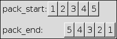

Adds child to the box starting from the end. See pack_start() for the parameter description.
The difference between pack_start() and pack_end() can be explained with curtains: pack_start adds the widgets from the left side of the box, and pack_end does the same, but from the right side. The more widgets you add, the more of the free space of the "window" between the curtains is taken by the widgets. If the box is full, the "curtains" meet in the center.
The buttons in the following image have been packed one after the other in numerical order: Button 1 first, Button 5 at last. You see that they are in order when using pack_start() , but turned order when with pack_end() as places are taken from the end.

Example 18. pack_start versus pack_end
<?php
/**
* Demonstrates the difference between pack_start and pack_end
* by adding several buttons to a GtkVBox with pack_start
* and pack_end
*/
//That's our demo box. All buttons are added here
$box = new GtkVBox();
//Add the first button. Note that we pack_end is used
//here. This one will be the last button on the box
$box->pack_end(new GtkButton('pack_end #1', false));
//Add the first button with pack_start. It will be the first
//on the box, although it's added at second.
$box->pack_start(new GtkButton('pack_start #1', false));
//Add the second button with pack_start. It will be number
//2, directly after the first button added with pack_start
$box->pack_start(new GtkButton('pack_start #2', false));
//This fourth button will be at position 3 in the box:
//After all buttons which have been added with pack_start,
//but before the previous one added with pack_end.
$box->pack_end(new GtkButton('pack_end #2', false));
//Initialize the window and add the demo box
$wnd = new GtkWindow();
$wnd->set_title('pack_start vs. pack_end');
$wnd->connect_simple('destroy', array('gtk', 'main_quit'));
$wnd->add($box);
$wnd->show_all();
Gtk::main();
?> |
See also: pack_start()